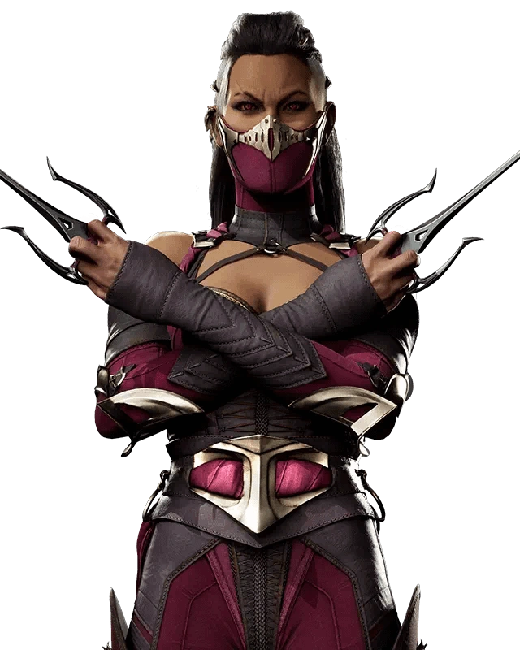
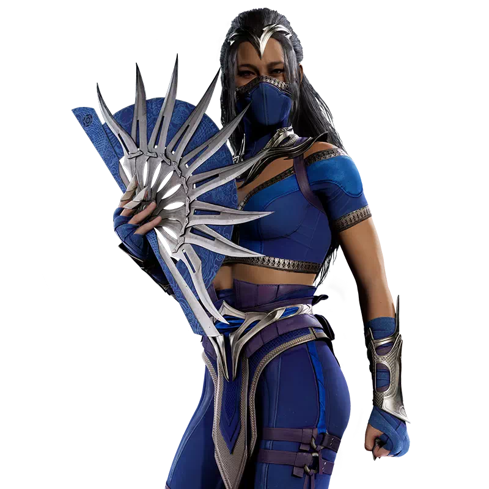
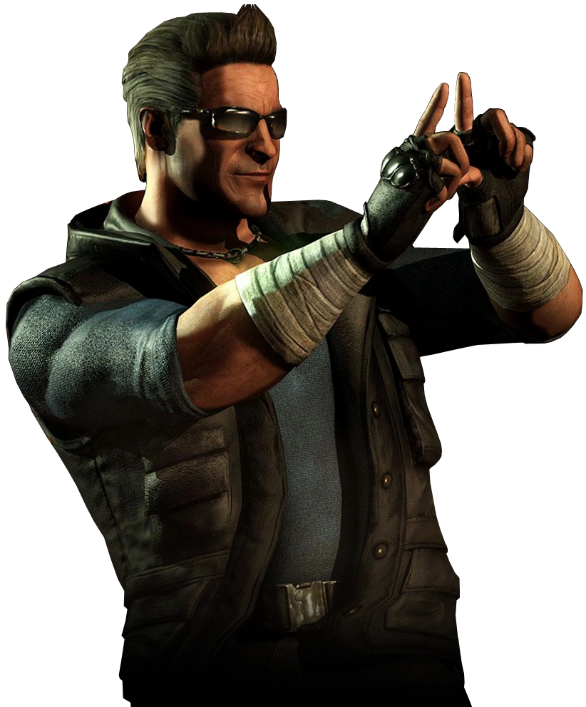

|
Come here and immerse yourself in the iconic and intuitive action of MORTAL KOMBAT MOBILE anytime, anywhere. Collect legendary fighters such as Scorpion, Sub-Zero, Raiden and Kitana, and fight epic 3v3 battles across the universe Mortal Kombat. In this visually stunning fighting game with a collection of cards, there are several modes and playable characters and the story of Mortal Kombat's 30-year legacy of fighting games. Get started today and prove yourself in the greatest fighting tournament in all areas! |

MILENAHeir to Outworld’s ThroneBorn mere seconds ahead of her twin sister, Mileena is the rightful heir to Outworld’s throne. But even so, there are those who distrust Mileena’s impulsiveness. They whisper that Kitana, with her steadier hand, should replace Mileena as heir to the throne.As Mileena fights for legitimacy, she hides a horrible secret: she is infected with the dreaded and lethal Tarkat disease. Were her affliction found out, Mileena would be forced into battle to save her throne. |

KITANAKitana has one purpose in life: to aid and protect her older sister, Mileena, as she prepares to rule Outworld one day.The steady-handed Kitana ignores the calls of those who advocate that she should replace her impulsive sister as heir. Instead, Kitana will defend the realm by fighting to make Mileena the best Empress possible. She will also fight to hide the dark secret that could end her sister's reign before it begins. |

JOHNNY CAGELike many stars before him, Johnny became addicted to his fame. He came to measure his self-worth by his fans' adoration and their praise of him on social media. But with his star now fading, Johnny is fighting an uphill battle to remain relevant. He joins Liu Kang’s Earthrealm champions hoping that it will provide his career and his fame a desperately needed boost. |